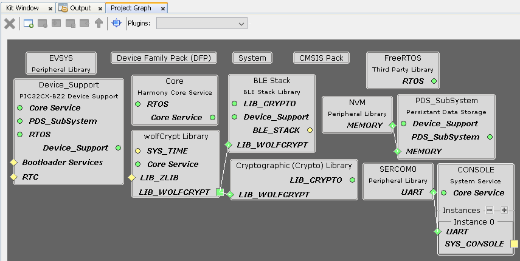
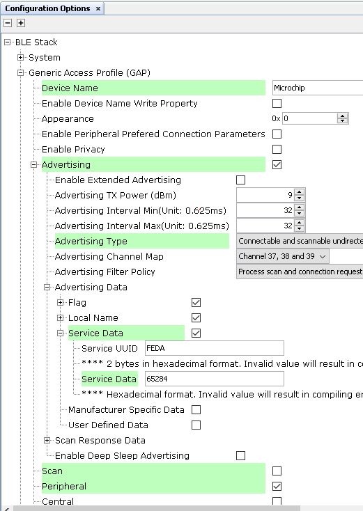
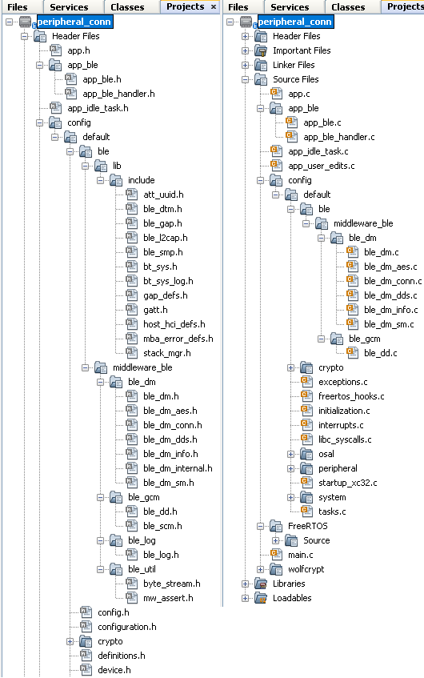
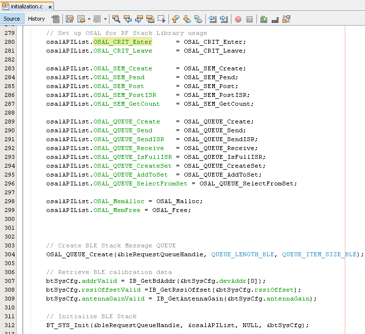
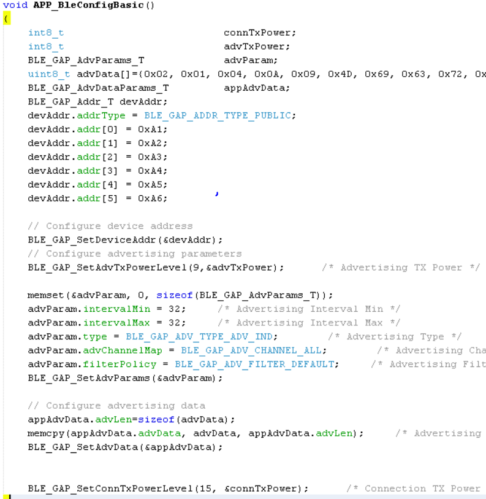
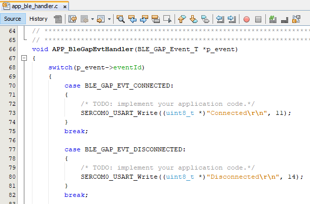

Getting Started with Peripheral Building Blocks
Legacy Advertisements --> BLE Connection -->BLE Transparent UART
Introduction
This document will help users enable advertisements and connection on WBZ451 Curiosity board using MPLAB Code Configurator(MCC) BLE Advertisement is Broadcasting of small packets to peer devices. In BLE a peripheral device always starts with advertisements.Advertisement packets enable a central or observer to discover and connect to a peripheral.
Users of this document can choose to just run the precompiled Application Example hex file on the WBZ451 Curiosity Board and experience the demo or can go through the steps involved in developing this Application from scratch
These examples each build on top on one and other. We strongly recommend that you follow the examples in order, to learn the basics concepts before progressing to the more advanced topics.
Recommended Reads
Hardware Required
| Tool | Qty |
|---|---|
| WBZ451 Curiosity Board | 1 |
| Micro USB cable | 1 |
SDK Setup
Software
- 1.
Smartphone App
- 1.
Light Blue
Programming the precompiled hex file or Application Example
Programming the hex file using MPLABX IPE
- 1.
Precompiled Hex file is located in "<Harmony Content Path>\wireless_apps_pic32cxbz2_wbz45\apps\ble\building_blocks\peripheral\peripheral_conn\hex" folder
- 2.
Follow the steps mentioned here
Caution: Users should choose the correct Device and Tool information
Programming the Application using MPLABX IDE
- 1.
Follow steps mentioned in of Running a Precompiled Example document
- 2.
Open and program the Application Example "peripheral_conn.x" located in "<Harmony Content Path>\wireless_apps_pic32cxbz2_wbz45\apps\ble\building_blocks\peripheral\peripheral_conn\firmware" using MPLABX IDE
<Harmony Content Path> how to find what is my Harmony Content Path
Demo Description
This Application Example enables users to transmit Connectable and Scannable Undirected BLE Advertisements.On reset demo will print "Advertising" on a terminal emulator like TeraTerm, this denotes start of advertisements. Central device scanning these advertisements can issue connection request and get connected with this device. Upon connection demo prints "Connected" message on terminal window
Testing

Terminal output

Users can use another WBZ451 Curiosity Board configured as BLE Connection(central) instead of using a Smartphone App
Developing this Application from scratch using MPLAB Code Configurator
This section explains the steps required by a user to develop this application example from scratch using MPLABx Code Configurator
Tip: New users of MPLAB Code Configurator are recommended to go through the overview.
- 1.
Create a new MCC Harmony Project -- link for instructions
- 2.
Import component configuration --This step helps users setup the basic components and configuration required to develop this application. The imported file is of format .mc3 and is located in the path "<Harmony Content Path>\wireless_apps_pic32cxbz2_wbz45\apps\ble\building_blocks\peripheral\peripheral_conn\firmware\peripheral_conn.X". Users should follow the instructions mentioned here to import the component configuration.
Tip: Import and Export functionality of Harmony component configuration will help users to start from a known working setup of MCC configuration
- 1.
Accept Dependencies or satisfiers, select "Yes"
- 2.Verify if the Project Graph window has all the expected configurationFigure 3. .
Verify Advertisement and Connection Configuration
- 1.Select BLE_Stack component in project graphFigure 4. .
Generate Code
Instructions onhow to Generate CodeFiles and Routines Automatically generated by the MCC
After generating the program source from MCC interface by clicking Generate Code, the BLE configuration can be found in the following project directories

The OSAL, RF System, BLE System initialization routine executed during program initialization can be found in the project files. This initialization routine is automatically generated by the MCC

Autogenerated, advertisement data format

| Source Files | Usage |
|---|---|
| app.c | Application State machine, includes calls for Initialization of all BLE stack (GAP,GATT, SMP, L2CAP) related component configurations |
| app_ble\app_ble.c | Source Code for the BLE stack related component configurations, code related to function calls from app.c |
app_ble\ app_ble_handler.c |
All GAP, GATT, SMP and L2CAP Event handlers |
Tip: app.c is autogenerated and has a state machine based Application code sample, users can use this template to develop their application |
Header Files
ble_gap.h- This header file contains BLE GAP functions and is automatically included in the app.c file
Function Calls
MCC generates and adds the code to initialize the BLE Stack GAP, GATT, L2CAP and SMP in APP_BleStackInit() function
APP_BleStackInit() is the API that will be called inside the Applications Initial State -- APP_STATE_INIT in app.c
User Application Development
Include
user action is required as mentioned here
definitions.h in all the files where UART will be used to print debug information
Tip: definitions.h is not specific to just UART peripheral, instead it should be included in all application source files where peripheral functionality will be exercised
Set PUBLIC Device Address
BLE_GAP_SetDeviceAddr(&devAddr);
BLE_GAP_Addr_T devAddr;
devAddr.addrType = BLE_GAP_ADDR_TYPE_PUBLIC;
devAddr.addr[0] = 0xA1;
devAddr.addr[1] = 0xA2;
devAddr.addr[2] = 0xA3;
devAddr.addr[3] = 0xA4;
devAddr.addr[4] = 0xA5;
devAddr.addr[5] = 0xA6;
// Configure device address
BLE_GAP_SetDeviceAddr(&devAddr);
Start Advertisement
BLE_GAP_SetAdvEnable(0x01, 0);

Connected & Disconnected Events
All the possible GAP, GATT, SMP and L2CAP Event handlers are available in file app_ble_handler.c, users can implement application code to denote Connection State here.

Users can exercise various other BLE Advertisement functionalities by using BLE Stack API